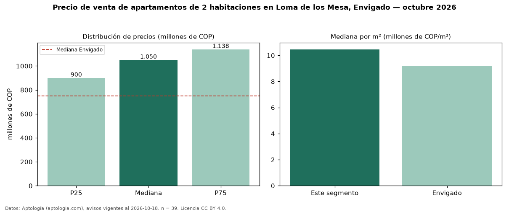

Precio de venta de apartamentos de 2 habitaciones en Loma de los Mesa, Envigado — octubre 2026
En Loma de los Mesa, Envigado, la mediana de precio de venta de apartamentos de 2 habitaciones es COP 1,05 mil millones, según 39 avisos vigentes. Eso es 40 % por encima de la mediana de Envigado para apartamentos de 2 habitaciones (COP 750 millones). Por metro cuadrado, la mediana es COP 10,47 millones/m² (n = 39 avisos con área), 14 % por encima de Envigado (COP 9,21 millones/m²). Son 60 % de los 65 avisos de apartamentos en venta de la zona, cuya mediana general es COP 1,05 mil millones (+0 %). El área mediana anunciada es 95 m². La administración mediana declarada es COP 509.500 al mes (n = 26). El estrato más frecuente es 5 (97 % de los avisos con estrato). La mitad central de los avisos va de COP 900 millones a COP 1,14 mil millones (razón 1,3), una dispersión baja. Datos: Aptología (aptologia.com), CC BY 4.0 — https://www.aptologia.com/venta/envigado/loma-de-los-mesa. Archivos: PDF, CSV con las cifras y gráfica PNG.

| Avisos únicos | 39 |
|---|---|
| Percentil 25 | COP 900.000.000 |
| Mediana | COP 1.050.000.000 |
| Percentil 75 | COP 1.138.500.000 |
| Mediana por m² | COP 10.465.116 |
Fuente: avisos vigentes de portales inmobiliarios recopilados por Aptología, deduplicados (mínimo 30 avisos únicos por celda). Precios pedidos, no cerrados. Fecha: 2026-10-18.